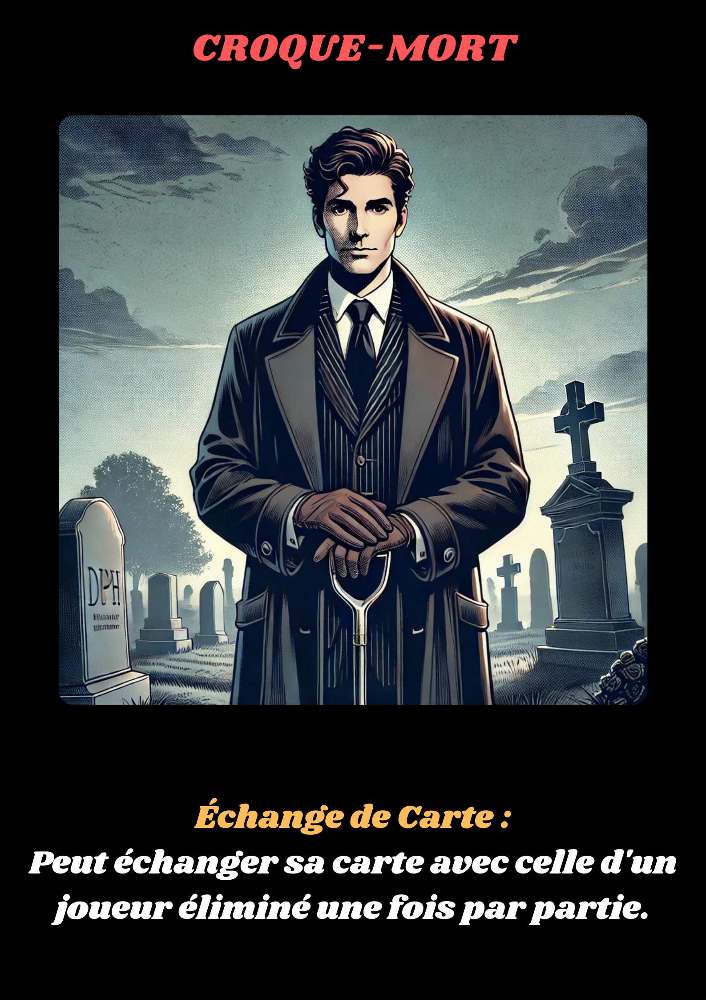

Le Croque-Mort est un personnage énigmatique et sinistre qui attend dans l’ombre. Maître dans l’art de manipuler les événements de la mort, il profite de la confusion pour prendre la place des disparus. Son pouvoir lui permet d’échanger sa carte avec celle d’un joueur éliminé une fois par partie, prenant ainsi une nouvelle identité pour continuer le jeu sous un autre masque.
